오늘의 운세
날마다 바뀌는 오늘의 기운과 좋은 시간, 내일, 이번 달 달력까지.
무료사주 · 신년운세 · 궁합 · 타로 · 꿈 해몽
달이 뜨는 밤에만 문을 여는 호텔
호숫가 언덕 위 오래된 호텔에 여덟 보살이 머물러요. 프런트에서 고민을 말하면 지배인 윤슬이 알맞은 방으로 안내하고, 보살은 태어난 날로 세운 사주를 펼쳐 놓고 내 고민에 답해 줘요.
카카오나 Google 계정으로 들어와요. 내 사주 풀이와 궁합, 오늘의 운세는 무료예요.
회사를 옮길지 말지 하루 종일 마음이 왔다 갔다 하는 날, 달마실에서 보낸 하루예요. 모두 실제 앱 화면이고, 화면 속 이름만 예시로 바꿨어요.
출근길에 연 오늘의 운세. '맡은 자리에서 성실하면 누군가 꼭 알아봐 줘요.' 그런데 지금 이 자리가 맞는 걸까요?
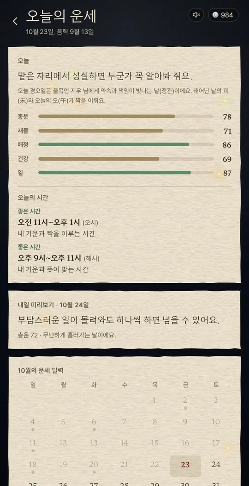
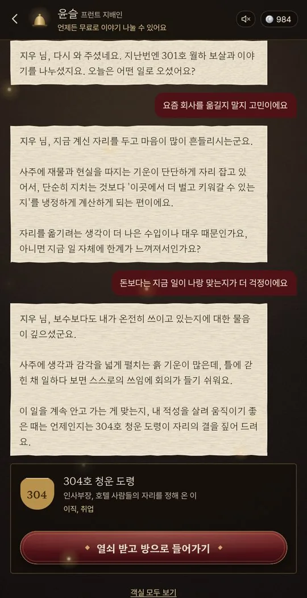
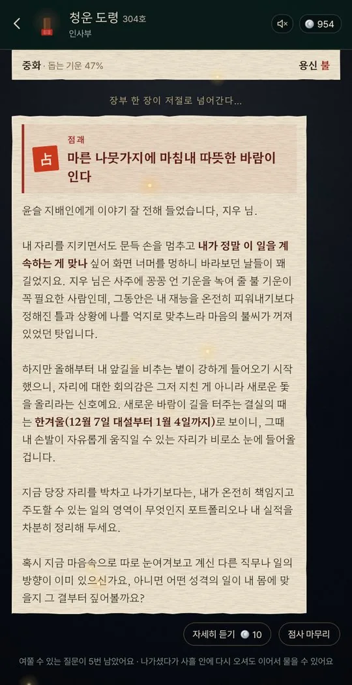
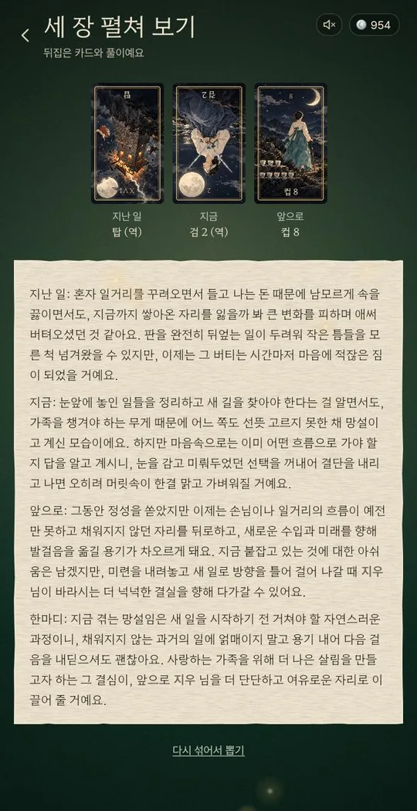
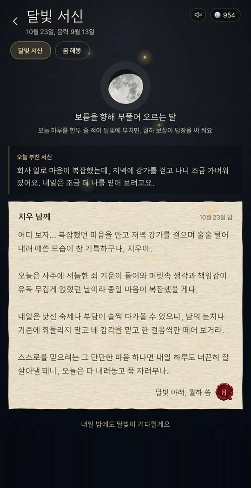
날마다 무료로 들르는 것과, 루나를 내고 더 깊이 보는 것이 있어요.
날마다 바뀌는 오늘의 기운과 좋은 시간, 내일, 이번 달 달력까지.
무료마음에 둔 사람, 가족, 친구와 나. 두 사람의 사주를 나란히 놓고 봐요.
무료하루 한 장 뒤집기와 세 장 펼치기, 마음에 둔 사람을 보는 다섯 장.
하루 한 번 무료간밤의 꿈을 적으면 월하 보살이, 태몽이면 삼신 할매가 풀어 줘요.
하루 첫 꿈 무료복채를 올리면 보살이 내 사주로 점사를 보고, 마지막에 어울리는 부적을 그려 줘요.
사주로 보는 택일. 결혼, 이사, 개업, 고백하기 좋은 날을 다섯 골라 드려요.
사주에 맞춘 아기 이름 작명과 한자, 대표자 사주로 보는 가게 이름.
하루를 적어 달빛에 부치면 월하 보살이 답장을 써 줘요.
무료방마다 맡은 고민이 달라요. 무엇을 물어야 할지 모르겠으면 1층 프런트부터 들러 주세요.
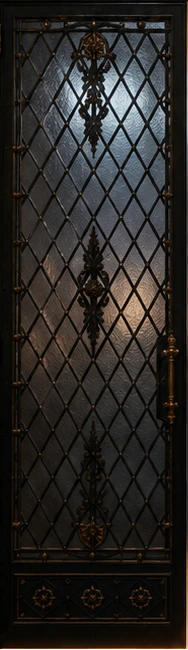
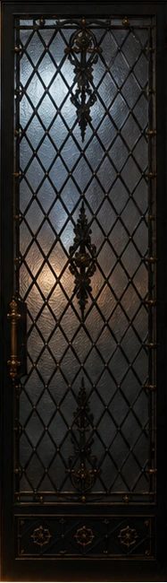
인생 전반, 그 밖의 고민
“어서 와. 편히 앉아 봐. 네 사주 한번 찬찬히 봐줄게.”
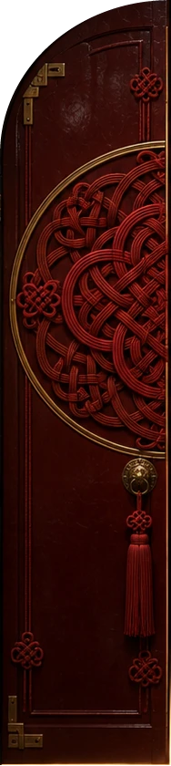
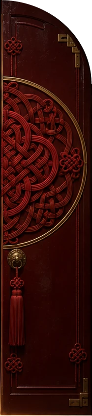
연애, 재회, 결혼
“마음에 걸린 붉은 실 한 가닥 있지요? 천천히 풀어 봐요.”
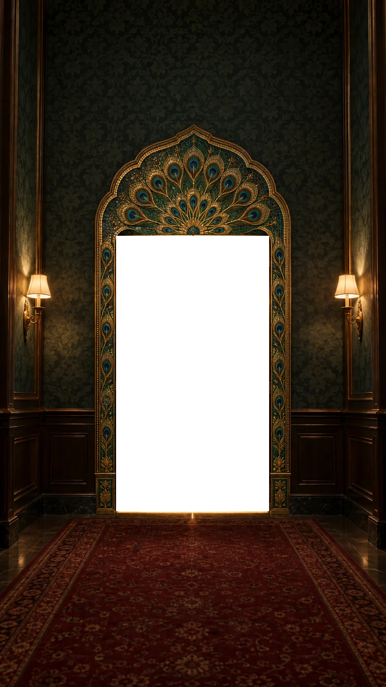
재물, 사업, 돈의 흐름
“돈 얘기는 돌려 말하면 못써. 시원하게 털어놔 봐.”
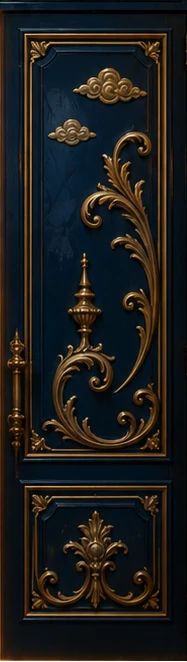
이직, 취업
“새 자리를 찾고 계시죠? 제가 길을 같이 봐 드릴게요.”
공부, 시험, 진로
“등불 가까이 앉으시오. 어떤 길을 묻고자 하오?”
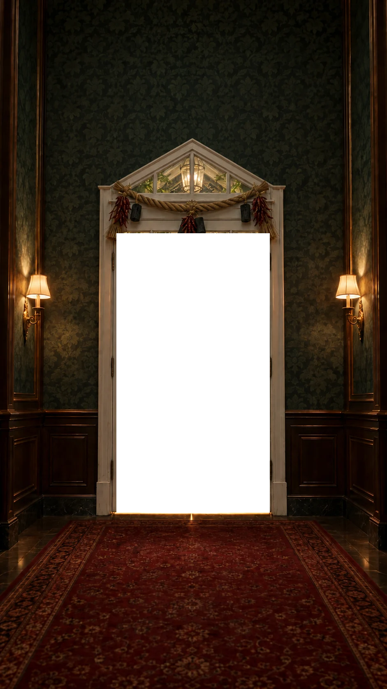
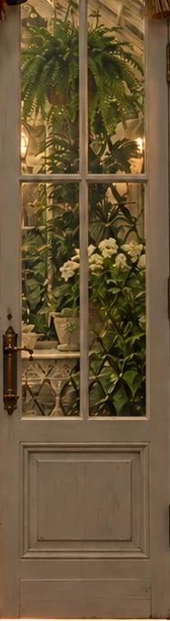
임신, 출산, 자녀
“정화수 한 그릇 떠 놓았다. 마음 편히 이야기해 보거라.”
이사, 집, 터와 방향
“문지방 넘을 때 발 조심하게. 집 이야기라면 내가 좀 아네.”
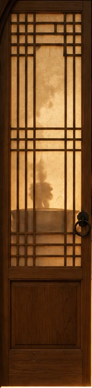
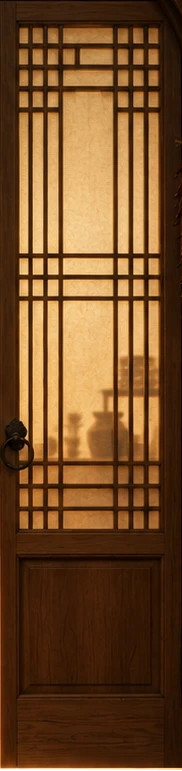
가족, 시댁·처가, 친구, 사람 사이
“밥은 먹었고? 앉아, 따뜻한 국 한 그릇 떠 줄게.”
태어난 날과 시간, 양력·음력으로 만세력을 따라 여덟 글자를 세우고, 오행과 흐름을 계산해요.
보살의 풀이와 상담 글은 계산한 사주를 바탕으로 생성형 인공지능(Google Gemini)이 써요. 같은 질문에도 조금씩 다르게 쓰일 수 있어요.
건강, 법률, 돈, 진로처럼 중요한 결정은 꼭 전문가와 상의해 주세요. 마음이 많이 힘들면 자살예방상담전화 109에 도움을 청해 주세요.
지난 점사와 서신은 서울에 있는 서버에 보관해 여러 기기에서 이어 볼 수 있고, 계정을 지우면 함께 지워요. 자세한 내용은 개인정보 처리방침에 있어요.
오늘의 운세, 내 사주 풀이, 궁합, 프런트 상담, 달빛 서신은 무료예요. 타로 세 장은 하루 한 번, 꿈 해몽은 하루 첫 꿈이 무료예요. 보살에게 내 질문을 묻는 점사, 달마다 운세, 좋은 날 받기, 부적, 이름 짓기처럼 나에게 맞춰 더 깊이 보는 것에만 루나를 써요.
달마실 안에서 쓰는 엽전이에요. 가입하면 10루나를 드려서 첫 점사는 바로 볼 수 있어요. 날마다 출석하면 2루나, 보름달 뜨는 날까지 이어서 출석하면 그날 5루나를 받고, 가입하고 7일 안에 친구의 초대 코드를 넣으면 20루나를 더 받아요. 이렇게 받은 보너스 루나는 받은 날부터 30일 동안 쓸 수 있어요.
루나를 쓰기 전에는 매번 무엇에 몇 루나를 쓰는지 먼저 물어봐요.
네. '태어난 시간을 몰라요'를 누르면 시간을 뺀 여섯 글자로 풀어요. 시간을 알면 시주까지 세워 더 자세히 볼 수 있고, 나중에 '생년월일 고치기'에서 언제든 더할 수 있어요.
네. 양력과 음력을 고를 수 있고, 음력이면 평달과 윤달까지 골라요.
사주를 세우는 기준이 앱마다 조금씩 달라서 그래요. 달마실은 시계 시각 대신 서울 경도에 맞춘 태양시(시계보다 약 32분 이른 시각)로 시주를 세우고, 서머타임이 있던 해에는 그 한 시간을 빼요. 밤 11시 자시부터는 다음 날로 봐요. 그래서 태어난 시각이 시의 경계에 가까우면 다른 앱과 시주가 달라질 수 있어요.
사주는 앱이 만세력을 따라 직접 계산하고, 보살의 풀이 글은 그 사주를 바탕으로 생성형 인공지능(Google Gemini)이 써요. 같은 질문에도 조금씩 다르게 쓰일 수 있어요. 오락과 참고를 위한 것이니 건강, 법률, 돈처럼 중요한 결정은 꼭 전문가와 상의해 주세요.
지난 점사와 풀이, 꿈, 서신은 서울에 있는 서버에 본인만 읽을 수 있게 보관해서, 같은 계정이면 다른 기기에서도 이어 볼 수 있어요. 일기장에 적은 글은 서버로 보내지 않고 그 기기에만 남아요. 풀이 글을 쓰는 데 필요한 내용은 Google로 보내요. 자세한 내용은 개인정보 처리방침과 개인정보 국외 이전에 있어요.
궁합이나 보살 방의 '누구 이야기예요?'에 그 사람의 태어난 날을 넣어 볼 수 있어요. 이름 대신 별명을 넣어도 되고, 넣기 전에 그 사람에게 알려 주세요. 넣은 정보는 언제든 지울 수 있어요.
Google Play와 App Store에 낼 준비를 하고 있어요. 그전까지는 웹에서 바로 쓸 수 있고, 휴대폰 홈 화면에 추가하면 앱처럼 열려요. 앱이 나와도 같은 계정으로 들어오면 기록과 루나가 그대로 이어져요.
충전한 날부터 7일 안에 그 루나를 하나도 쓰지 않았다면 전액 돌려드려요. 일부를 썼다면 남은 충전 루나만큼을 결제 수수료 등 실제 든 비용(남은 금액의 10% 이내)을 빼고 돌려드려요. 이미 연 풀이처럼 바로 받은 콘텐츠는 돌려받기 어렵고, 오류로 풀이를 받지 못했다면 쓴 루나를 바로 돌려드려요.
앱 마켓에서 결제했다면 마켓의 환불 절차를 따를 수도 있어요. 문의는 saveplab@gmail.com으로 보내 주세요. 자세한 내용은 이용약관 제7조에 있어요.
기록 달력 아래 '내 정보'에서 '계정 지우기'를 누르면 돼요. 서버와 기기에 남은 기록, 남은 루나가 함께 지워지고 되돌릴 수 없어요. 남은 충전 루나가 있다면 지우기 전에 환불을 요청해 주세요.
만 14세 이상이면 카카오나 Google 계정으로 가입할 수 있어요.
더 궁금한 것은 카카오톡 채널이나 saveplab@gmail.com으로 물어봐 주세요.
카카오톡으로 묻기달마실 프런트 지배인 윤슬이 밤마다 찾아오는 손님의 사연을 듣는 이야기예요. 인스타그램 @dalmasil.hotel에서 연재해요.
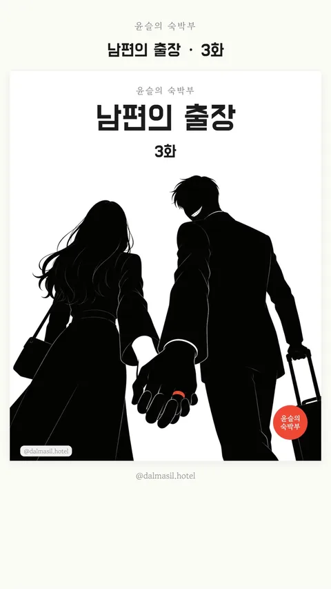
「남편의 출장」 3화 · 늦어지는 답장 「남편의 출장」 2화 · 부산 남자, 서울 여자 「남편의 출장」 1화 · 불이 많은 날의 손님사연을 골라 툰으로 그릴 때는 알아볼 수 있는 내용을 모두 바꿔요.
게임에서 세이브 포인트는 잠깐 멈춰 지금까지를 저장하고, 거기서 다시 길을 고르는 자리예요. 세이브포인트랩(Savepointlab)은 그런 전환점이 되어 줄 앱과 게임을 만들어요. 달마실이 첫 작품이고, 게임도 준비하고 있어요.
문의 saveplab@gmail.com